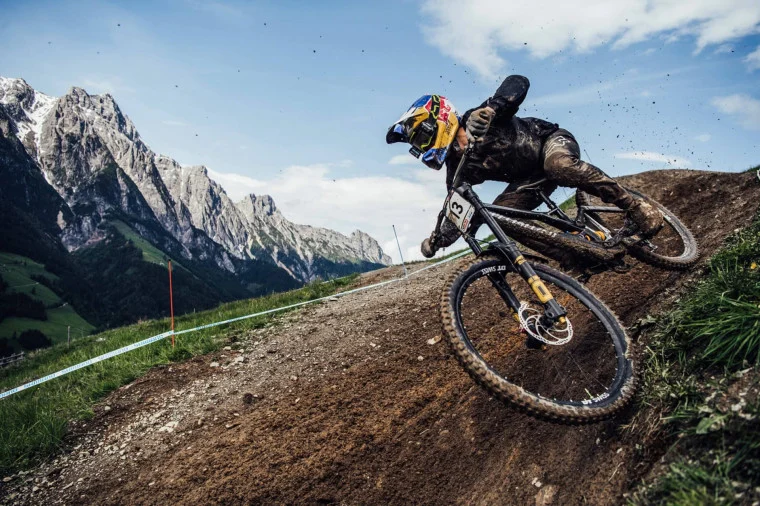

MTB START
Odlična izbira za začetnike in rekreativce, ki se vozijo po gozdnih poteh in makadamu.
Prednosti: enostavna uporaba, udobje in vsestranskost.
Odkrij svet gorskega kolesarjenja!
Gorska kolesa oziroma MTB (Mountain Bike) so namenjena vožnji po gozdnih poteh, hribih, makadamu in zahtevnem terenu. Primerna so za rekreacijo, raziskovanje narave in adrenalinske spuste.
V Sloveniji so priljubljene kolesarske lokacije Mariborsko Pohorje, Kranjska Gora in številne urejene gorske kolesarske poti. Gorska kolesa imajo široke pnevmatike, vzdržljiv okvir in pogosto vzmetenje.

Odlična izbira za začetnike in rekreativce, ki se vozijo po gozdnih poteh in makadamu.
Prednosti: enostavna uporaba, udobje in vsestranskost.
Za kolesarje, ki se radi vozijo po zahtevnejših poteh in hribovitem terenu.
Prednosti: boljši nadzor, zmogljivost in stabilnost.
Za zahtevne spuste, kolesarske parke in tehnične gorske proge.
Prednosti: veliko vzmetenja, stabilnost in nadzor pri spustih.
Ščiti glavo in je pomemben del varne vožnje.
Izboljšajo oprijem krmila in zaščitijo dlani.
Osnovno orodje in rezervna zračnica pomagata pri okvarah.
Širše pnevmatike in ustrezen tlak lahko izboljšajo oprijem na zahtevnem terenu. Pravi tlak je odvisen od pnevmatik, podlage, teže kolesarja in načina vožnje.